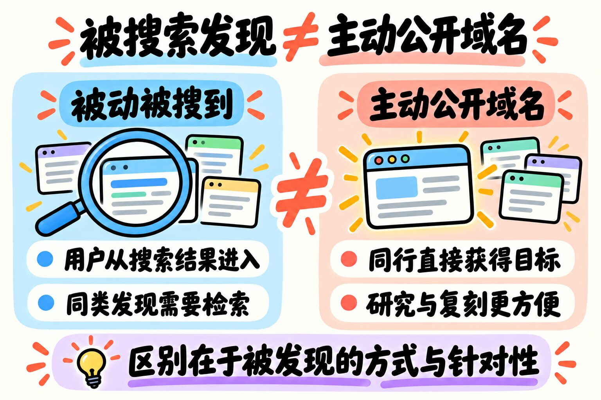
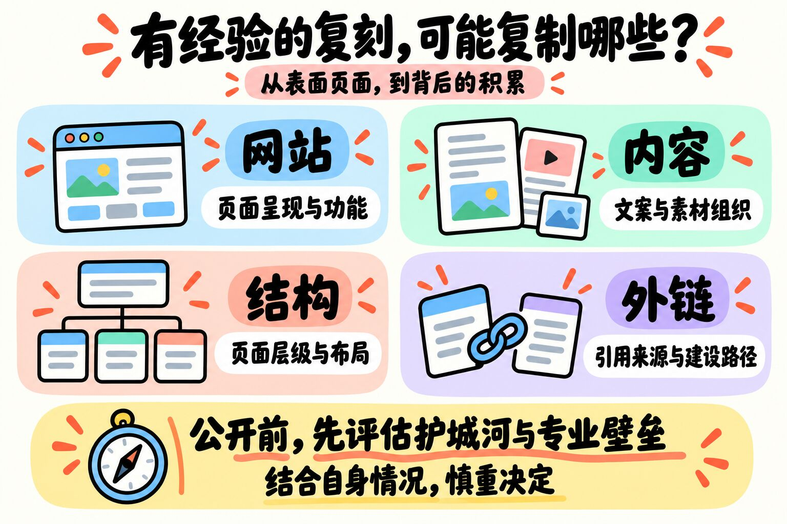

大家好，今天是 2026 年 10 月 26 日，周一。
昨天最大的瓜来自于我们社群的虾友 L 总，也是最喜欢分享的虾友之一。
他发帖吐槽，因为如实地分享过自己的产品域名，没过多久就冒出了一堆竞品，现在已经老实了 Orz。
速度超出他的预期。
他说以前有人劝过他，不要公开自己产品的域名，他没有听，现在已经老实了 Orz。
其实我在早期也有这种想法，想公开自己的产品。
当时 周同学 和 理想是自由 大佬都严肃地阻止过我。
好在我这个人比较听劝，没有 L 大佬这么头铁，我立马就放弃这个念想了。
当然，我其实有分享过，群里面最早期的虾友应该知道，然后我最早期做的那几个站就冒出了几个竞品。
当然因为词本身搜索量就比较低，哪怕我现在排名第一也不赚钱，后续就不了了之了。
所以你看，没有收益的事情，别人也是懒得抄的，能被抄也算是一种认可吧，当然这种认可我感觉没多少人喜欢就是了。
大家对这种行为肯定都是深恶痛绝的，因为个人能做的赛道流量上限都不太高。
竞争多了，那分流到你那里的肯定就少了，除非一些天赋异禀的，能在红海中杀出一条血路。
01 被动被搜到 vs 被人盯上：完全是两码事
当然有的朋友可能会疑惑：你产品上线之后，不就是公开的么？大家只要搜索都能搜索到啊。
但是你要想一想，被动的搜索，和被人盯着搞是完全不一样的。
比如我上了一个站，在谷歌这个体系下肯定是完全公开的。
但是谷歌这个体系它大啊，全世界每天那么多人使用搜索功能，而且大部分都是正常的用户。
像我们这样的从业者毕竟是少数，大家每天大海捞针，寻找关键词，真能找到和自己做的一模一样的词，概率其实挺低的。
当然，新词不算，因为这种其实说白了就是限定了范围和方向了。
我们现在做的也只是新词的一个方向，比如游戏站，还有最新带火的视频新词。
那有没有其他的新词呢？我相信肯定是有的，如果大家能找到，就可以闷声发大财了。

02 谁在抄你？像素级复刻的老鸟最具杀伤力
回到前面的话题，主动公开自己的产品，相当于就是把自己的产品放在聚光灯下面。
那么最有可能直接过来抄的有哪些呢？
我觉得有两种：
第一种就是完全的小白，新手朋友本来就不知道要做啥，这个时候你告诉他：嗨，我这个产品正在赚钱哦！那不抄你抄谁呢？
还有一种就是有一定经验的老鸟杀伤力最大，能做到对你进行像素级复刻，从网站、内容、结构甚至外链一比一复刻。
那你想想，这种抄袭的威力，你能不能扛得住？
新手完全不懂，其实没啥杀伤力的；但是老鸟朋友处于中间层，杀伤力最大。
至于更牛逼的大佬，可能压根就看不上，所以也就不存在抄与不抄了。
看到这里，我相信大家对于为什么不公开产品信息就有一定理解了。
是否要公开自己的产品，需要结合自身情况，慎重决定。如果没有一定的护城河和专业壁垒，我觉得就不要随意公开啦。

今天话有点收不住，一下子讲了这么多。
以后如果还有不懂的小伙伴上来就问你域名，你就可以把这篇文章丢出来了，能节省大家的时间。
好咯，今天就到这里啦，我们明天见。